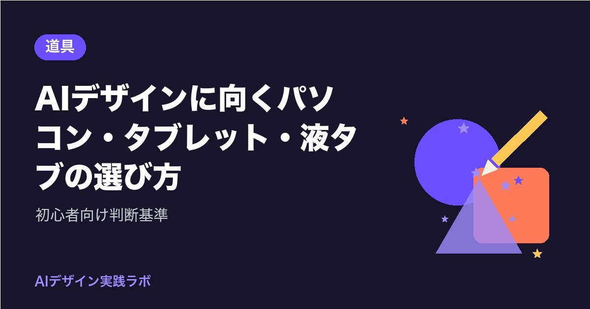

AIデザインに向くパソコン・タブレット・液タブの選び方｜初心者向け判断基準

「AIでデザインを始めたいけど、パソコンを買い替えた方がいいの？」という相談はとても多いです。
結論から言うと、使い方によっては今の機材のままで十分なこともあります。
この記事では、特定の機種をすすめるのではなく、自分に合った道具を選ぶための判断基準を整理します。
まず「どこでAIを動かすか」を考える
AIデザインの道具選びで最初に考えたいのは、AIがどこで動いているかです。
- ブラウザやアプリで使うクラウド型のAIツール：画像の生成はサービス側のサーバーで行われます。手元のパソコンは操作画面を表示するだけなので、高い性能は必要ありません
- 自分のパソコンで画像生成AIを動かす（ローカル実行）：生成処理を手元で行うため、高性能なGPU（画像処理用のパーツ）や大きなメモリが必要になります
初心者がロゴやSNS画像、チラシを作る用途であれば、多くの場合はクラウド型のツールで足ります。ブラウザ中心の使い方なら、スペックは控えめでも問題ないと考えてよいでしょう。
ローカル実行に挑戦したくなったら、そのときに改めて専用の構成を検討する方が、無駄な出費を避けられます。
パソコン選びの判断基準
ブラウザ中心で使う前提で、パソコンを選ぶときに見ておきたいポイントをまとめます。
| 項目 | 目安の考え方 | 理由 |
|---|---|---|
| メモリ | 余裕があるほど快適。最低限より一段上を選ぶと安心 | ブラウザのタブを多く開き、デザインツールも同時に使うため |
| ストレージ | 画像を多く保存するなら容量に余裕を | 生成画像や書き出しデータがすぐ増える |
| 画面の色域 | sRGBを広くカバーする画面が望ましい | 色の見え方が不正確だと、仕上がりの色を判断しにくい |
| 画面サイズ | 作業領域が広いほど楽 | ツールのパネルと作品を並べて表示できる |
| CPU・GPU | ブラウザ中心なら一般的な性能で可 | 重い処理はサーバー側で行われるため |
この中で特に意識したいのがメモリと画面の色域です。
メモリは、同時に開いているアプリやタブの数に直結します。AIツール、デザインツール、参考資料のページを並べて作業すると、思った以上にメモリを使います。後から増設できない機種も多いので、購入時に少し余裕を持たせると長く使えます。
画面の色域は、画面がどれだけの範囲の色を表示できるかを示すものです。色域が狭い画面では、同じデータでも色がくすんで見えることがあります。スペック表にsRGBやDCI-P3などのカバー率が書かれている場合は、参考にしてみてください。
外付けのモニターを追加するのも、作業効率を上げる有効な方法です。
iPad + Apple Pencilという選択肢
最近は、iPadとApple Pencilの組み合わせでデザインをする人も増えています。
- ブラウザやアプリでAIツールを使える
- Apple Pencilで、AIの出力に直接描き足したり、ラフを描いたりできる
- 持ち運びやすく、ソファやカフェでもアイデア出しができる
一方で、印刷用の細かいデータ作成や、複数のウィンドウを並べた作業はパソコンの方が向いている場面もあります。
「アイデア出しや手描きの加筆はiPad、入稿データの仕上げはパソコン」というように、役割を分けて使うのも一つの方法です。
Apple Pencilは世代によって対応するiPadが異なるため、購入前に公式サイトで対応機種を確認してください。
ペンタブと液タブの違い
パソコンで手描きの要素を加えたい場合は、ペンタブレットを使う方法があります。大きく分けて2種類あります。
ペンタブレット（板タブ）
画面のない板の上をペンでなぞり、パソコンの画面を見ながら操作するタイプです。
- 比較的手に取りやすい価格帯の製品が多い
- 机の上で場所をとりにくい
- 手元と画面が離れているため、慣れるまで少し練習が必要
AIで作った画像の切り抜きや簡単な修正、ちょっとした描き足しが中心なら、まずは板タブから始めるのも良い選択です。
液晶ペンタブレット（液タブ）
画面に直接ペンで描けるタイプです。
- 紙に描く感覚に近く、直感的に操作できる
- 板タブよりも価格が高くなる傾向がある
- パソコンとの接続方法（ケーブルの種類など）を確認する必要がある
13インチ前後のサイズは、机に置きやすく、初めての液タブとして選ばれることが多いサイズです。
手描きのイラストをAIの出力と組み合わせたい人や、本格的に描く作業が多い人に向いています。
買う前に確認したいこと
道具を買う前に、次の点を確認しておくと失敗が減ります。
- 使いたいAIツールやデザインツールが、自分のOSやブラウザに対応しているか
- ペンタブ・液タブのドライバー（動かすためのソフト）が、自分のOSに対応しているか
- 接続端子の種類（USB-Cなど）と、変換アダプタが必要かどうか
- 保証やサポートの内容
また、印刷物を作る予定がある場合は、画面で見た色と印刷の色が違って見えることも覚えておきましょう。画面の明るさを上げすぎない、色を判断するときは同じ環境で見る、といった小さな工夫でも、色の判断は安定しやすくなります。
製品の仕様や対応状況は変わることがあるため、執筆時点の情報ではなく、各メーカーの公式サイトで最新の情報を確認してください。
まとめ
- クラウド型のAIツールをブラウザ中心で使うなら、スペックは控えめでよい
- パソコン選びではメモリの余裕と画面の色域を特に意識する
- iPad + Apple Pencilはアイデア出しや手描きの加筆に便利。役割分担で使うのもあり
- 手描き要素を加えるなら、手軽な板タブか、直感的な液タブかを用途で選ぶ
- 対応OS・接続端子・ドライバーは、購入前に公式サイトで確認する
最初から完璧な環境をそろえる必要はありません。今ある道具で始めてみて、「ここが不便」と感じたところから少しずつ足していくのが、結果的に無駄のない選び方です。
読んだ内容から、まず1つだけ試してみませんか。今日、プロンプトを1行書いて画像を1枚作るだけでも、立派な一歩です。
あなたなら、まず何から作ってみますか？
最後まで読んでくださり、ありがとうございました。